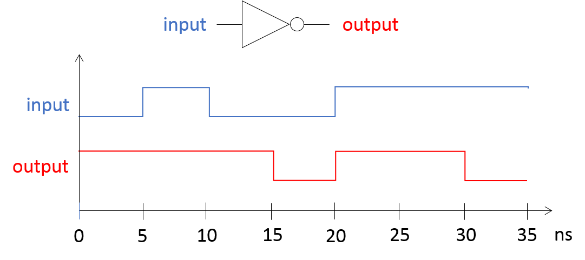
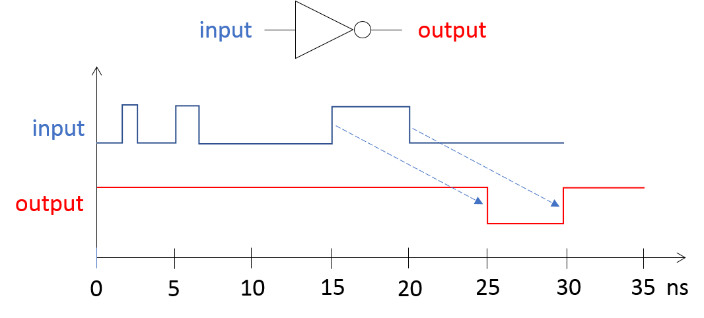
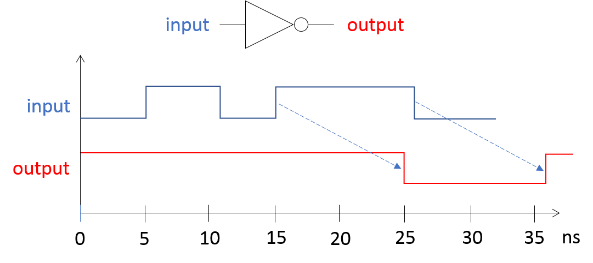
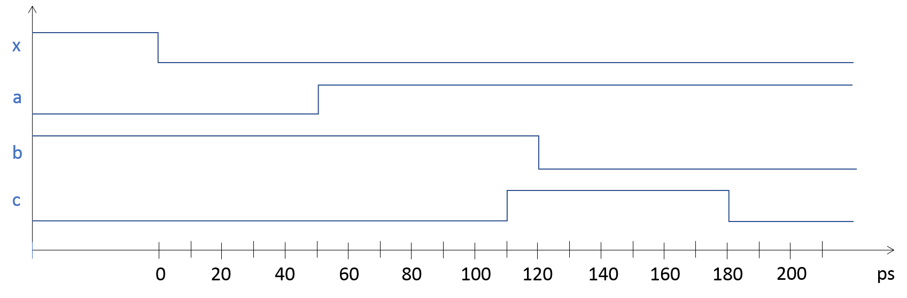
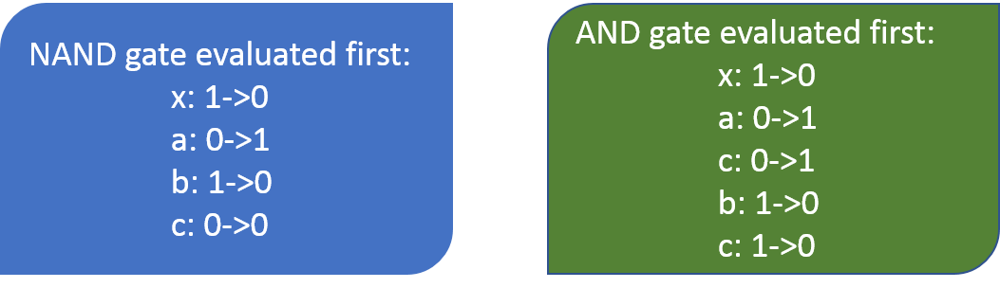
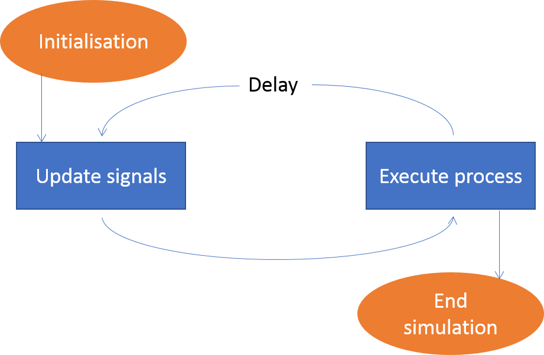
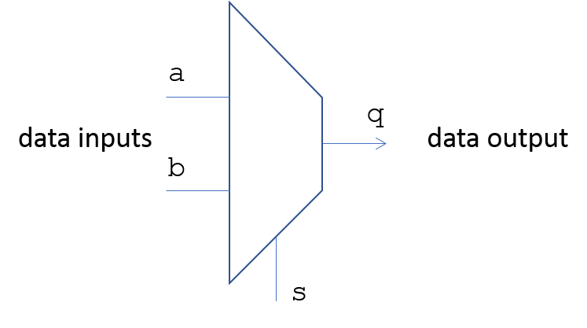
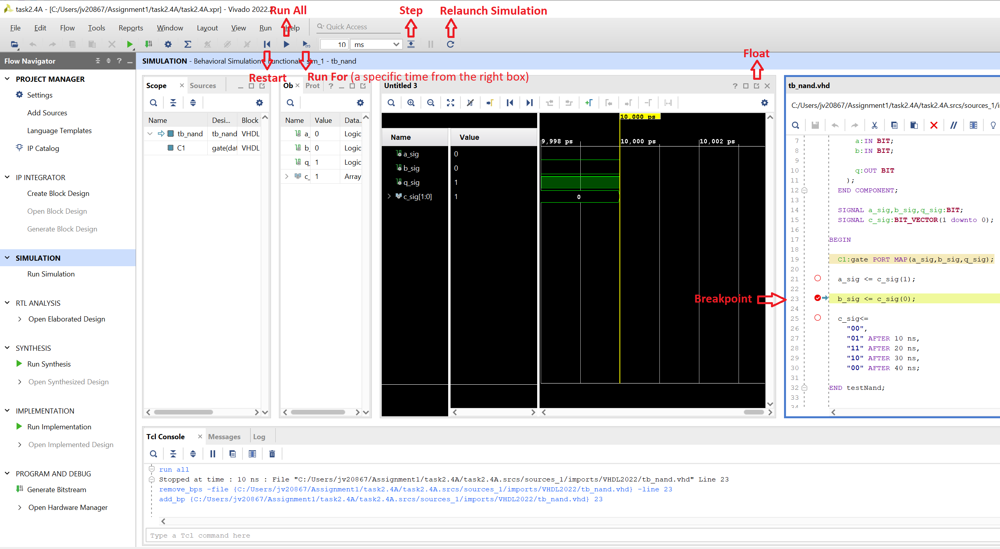

|
|
|
|
The learning objectives for this section are:
As explained in example Task 2.4A signal assignments are concurrent, and every signal assignment has a delay. This is a topic that needs to be thoroughly understood to do any sort of work in any HDL (VHDL or Verilog), and is the subject of this section.
Consider part of the NAND gate described in Task 2.4A, without the explicit delays:
q_prim <= a AND b;
q <= NOT q_prim;
The signals to the right of the assignment operator are the inputs. Thus for each assignment, the signals on the right-hand side are continuously monitored for any changes. A change in value of a signal is known as an event. An event on the inputs in an assignment will lead to the output being evaluated; if the new value is different from the old value, depending on the type of assignment, the output signal may be updated at some point in the future. Why do we say may be updated, and not always updated? It depends on the type of signal assignment and the precise duration of pulses as seen in the next section.
This monitoring of input signals takes place separately for each signa l assignment. Thus each signal assignment is concurrent. If the signal being assigned is an input in another assignment, i.e., it appears on the right-hand side of some other assignment, that line of code will in turn be evaluated. For example, if the value of q_prim changes, it will trigger the evaluation of the second statement where it is an input. This type of simulation, where value changes in signals trigger execution of assignment statements where those signal are inputs, is known as an event-driven simulation [7]. Changes in signals ripple through the code, similar to how boolean value changes at the output of logic gates will ripple through a physical circuit.
Consider the following code fragment:
q_prim <= a AND b AFTER 5 ns;
Clearly this means that whenever an event occurs on a or b, q_prim is to be updated with the new value after a delay of 5 ns in simulator time. However, even if there was no explicit delay as, for example, in the following code fragment, a signal assignment still incurs a delay.
q_prim <= a AND b;
Thus any signal assignment in VHDL is actually a scheduling for a value to be placed on that signal, some time in the future. This scheduling of a future value is referred to as a signal transaction (an event occurs only if the new value is different from the old value). The rules governing that depends on how the signal assignment delay is specified. The delay can be one of three types:
Transport delay is the simplest, any change in an input signal value will cause the assignment to be evaluated, and a transaction will be scheduled on the output signal after the specified propagation delay. Consider the following fragment of code:
output <= TRANSPORT NOT input AFTER 10 ns;
Here, output will be an inverted copy of input delayed by the 10 ns propagation delay (Fig. 3.1).

An inertial delay specification includes not just a signal propagation delay specification, but also a pulse width specification where input pulses that are shorter than this width are suppressed. Consider the following line:
output <= REJECT 5 ns INERTIAL NOT input AFTER 10 ns;
Here, output will be an inverted copy of input delayed by the 10 ns propagation delay, but any pulses that are 5 ns long or of shorter duration will be suppressed! This is illustrated in Fig. 3.2.

The keyword REJECT is optional; if a minimum input pulse width is not specified explicitly, the pulse width is assumed to be the same as the propagation delay. Further, the default delay type in VHDL is inertial, so if the input pulse width is the same as the propagation delay, the word INERTIAL can also be left out! The waveform for the following assignment is illustrated in Fig. 3.3.
output <= NOT input AFTER 10 ns;

Finally, let's look at an example where gates are modelled with an inertial delay broadly representative of the gate delay. Assume we have to model the circuit of Fig. 3.4.
This circuit can be modelled by the following code:
ENTITY logic_a IS
PORT (
x:IN BIT; -- input
c:OUT BIT -- output
);
END logic_a;
ARCHITECTURE dataflow OF logic_a IS
SIGNAL a, b: BIT;
BEGIN
a <= NOT x AFTER 50 ps; -- INVERTER process
b <= a NAND '1' AFTER 70 ps; -- NAND process
c <= a AND b AFTER 60 ps; -- AND process
END dataflow;
The waveforms at circuit nodes corresponding to x being quiescent for a long while and making a transition at 0 ps is given in Fig.3.5.

The transition of x at 0 ps acts as a trigger for the inverter process, (Note that we loosely call a single line signal assignment a process here. We will adopt a more rigorous definition in Section 4.1.) Thus, a transaction is scheduled at 50 ps on the signal a. This event, a '0'->'1' transition, in turn acts as a trigger for two processes, the NAND process and AND process, as a is an input to both processes. Thus, signal c updates at 110 ps and signal b at 120 ps. As b is also an input to the AND process, this triggers a second transaction on c, which duly takes place 60 ps later, at 180 ps. The final result is that we observe a glitch at the output, which can be broadly described as a transition to an intermediate value before taking on its final value; if the gates were ideal and had zero physical delay, there would be no glitch.
If no physical delay is specified a signal assignment still cannot take place immediately. When a delay is not explicitly specified, signal assignments are scheduled to take place after a delta delay. This is a unit of time that is infinitesimally small but quantised, so that two deltas are greater than one delta and so on. To understand how delta delays work, let's first consider an example without delta delays, i.e., where signal assignments take place immediately (this example is based on an example by Douglas Perry [8]).
Given in Fig. 3.6 is the same circuit as Fig. 3.4 that we modelled earlier, without gate delays.
This circuit can be modelled by the following code:
ENTITY logic_a IS
PORT (
x:IN BIT; -- input
c:OUT BIT -- output
);
END logic_a;
ARCHITECTURE dataflow OF logic_a IS
SIGNAL a, b: BIT;
BEGIN
a <= NOT x; -- INVERTER process
b <= a NAND '1'; -- NAND process
c <= a AND b; -- AND process
END dataflow;
Just as before, assume that the input (node x) is quiescent at '1' for a long time and changes from '1'->'0', say at time 10 ns. In response, the inverter output (node a) makes a transition from '0'->'1'. Now we can choose to evaluate either the NAND gate or the AND gate first. The order in which the nodes transition for both choices is shown in Fig. 3.5

As can be seen, depending on which gate we choose to evaluate first, node C will either experience a zero-width glitch (AND first) or not have any glitch (NAND first). This is highly unsatisfactory on many levels. First, we wish to see exactly the same output whatever simulator we choose, or however many times we choose to run this simulation. As the simulator has no guide on what to evaluate first, it cannot guarantee that the same output will always be produced for the same circuit and simulation setup. Second, we wish the evaluaton to closely mirror what would happen with real hardware, and real, physical gates always have delays.
Now consider how this same circuit would be evaluated if every signal assignment had a delta delay associated with it. The order of node transitions is shown in Table 3.1.
| Time | Event | Process trigger due to event | |
|---|---|---|---|
| Physical | Delta | ||
| 10 ns | 0 | x: 1->0 | Evaluate INV |
| 1 | a: 0->1 | Evaluate NAND, AND | |
| 2 | b: 1->0, c: 0->1 | Evaluate AND | |
| 3 | c: 1->0 | ||
| 11 ns | |||
In this example, each signal assignment requires one delta delay before the signal assumes its new value. Also note that more than one process can be executed in the same simulation cycle (e.g. both the NAND process and the AND process are executed during delta 2).
Following the sequence of cascading signal assignments, the '1'->'0' transition on x causes the INVERTER process to be executed, which results in a '0'->'1' transition being scheduled on a, one delta time in the future. The INVERTER process then suspends. Since all processes are suspended, simulation time advances by one delta so that a can assume its new value.
The new value of a awakens the NAND and AND processes and they are executed. Because the value of a will not change again during simulation time delta 2, it doesn't matter whether the NAND or AND process is evaluated first. In either case, the NAND process leads to a '1' being scheduled for c and a '0' being scheduled for b, both one delta delay in the future. After the assignments are scheduled, the NAND and AND processes suspend again. Now simulation time advances by one delta again so that b and c can assume their new values.
The new value of b causes the AND process to be evaluated again. This time, a '0' value is scheduled to be assigned to c one delta delay in the future, and the AND process can then suspend. Finally, simulation time advances by one delta so that c can assume its new, and final value of '0'. This results in the behaviour we would logically expect with unequal path delays from input to output, a glitch.
Thus, the delta delay associated with signal assignments allows the behaviour of real hardware, even if we do not know what the physical delays may be. For example, when using HDLs to programme FPGA hardware, the user does not know what the delays are at the point of implementing the functionality. The synthesis tools will populate these values as part of the automated flow after mapping the functionality to hardware. Having a delta delay ensures that the integrity of hardware behaviour is maintained regardless of whether or not a physical delay is associated with a gate in the functional description.
Make sure you understand signal assignment delays and inertial delays in particular, before going on to the following section.
So far, we have only used single line signal assignments to describe functionality. A signal assignment is the simplest example of a process in VHDL, which is the fundamental element for describing component behaviour. In the case of a signal assignment, the process is implicit; a process can also be declared explicitly, using the key word process. We will look at processes in detail later (Section 4). For now, just consider that process bodies contain a series of statements, which are conditional signal assignment statements. In illustration, the following two fragments of code are completely equivalent:
-- Code fragment 1
...
q_prim <= a AND b;
q <= NOT q_prim;
...
-- Code fragment 2
...
PROCESS(a, b)
BEGIN
q_prim <= a AND b;
END PROCESS;
PROCESS(q_prim)
BEGIN
q <= NOT q_prim;
END PROCESS;
...
The collection of signals inside the parenthesis just after the word process is known as the sensitivity list. A sensitivity list is a way of specifying the triggers to wake the process up; it is not a syntax error to omit the sensitivity list, but will result in grave simulation errors, as the process will run only if there are events on the signals in its sensitivity list.
Collections of processes describe the functionality of the component, and whether implicit or explicit, the mechanism for communicating between processes is the signal: events on signals that are inputs to a process trigger that process, and cause it to be executed. Process executions then result in new events on signals they drive, which are inputs to other processes. This is how data propagates between communicating processes via shared signals.
The exact same functionality could also be achieved by one process instead of two:
PROCESS(a, b, q_prim)
BEGIN
q_prim <= a AND b;
q <= NOT q_prim;
END PROCESS;
Notice how the sensitivty list contains all signals that are read in that process. In this case, the process will run once, when an event on a or b occurs. When execution reaches the end of the process, it is scheduled to run again, as the execution of the first assignment results in a new trigger for the process.
Now we are in a position to put it all together. The VHDL simulation model is essentially a 2-step process as shown in Fig. 3.6.

At the start of a simulation, signals with default values are assigned those initial values. In the first execution of the simulation cycle, all concurrent signal assignments are executed and changes are scheduled for some future point in time. Also, explicitly declared process bodies are executed until they reach their respective suspend points (the end of the process body, or a wait statement to be covered later). All process executions are concurrent.
Once all processes have been suspended, the simulator will advance simulation time just enough so that the first pending signal assignments can be made. After the relevant signals assume their new values, all processes examine their input signals to determine if they can proceed. Processes that can proceed will then execute concurrently again until they all reach their respective suspend points. This cycle continues until the simulation termination conditions are met or until all processes are suspended indefinitely because no new signal assignments are scheduled to trigger any suspended processes.
Fig. 3.9 shows a multiplexer (MUX) with two data inputs (a and b), one address input (s for select) and one output (q). The address line selects which of the two inputs is to be connected to the output.

The Vivado simulator marks the executable lines with an empty red circle (e.g., line 21 in the following figure), on the left hand margin of the Text Editor, beside the line numbers. Click the red circle in the left margin, to set a breakpoint, as shown in the following figure line 23. Observe that the empty circle becomes a red dot to indicate that a breakpoint is set on this line. Clicking on the red dot removes the breakpoint and reverts it to the empty circle. Debugging in the Vivado simulator, with breakpoints and line stepping, works best when you can view the Tcl Console, the Waveform window, and the HDL source file at the same time, as shown in the following figure. Restart the simulation by clicking on the Run All button to the left of the simulation run-time cage as shown in Fig. 3.10. Click the Restart button as shown in below figure to restart the simulation from time 0. Step through the code and see the waveforms change in response to the various events. Setting a breakpoint causes the simulator to stop at that point, every time the simulator processes that code, or every time the counter is incremented by one.

The following points were covered in this section.
|
|
|
|